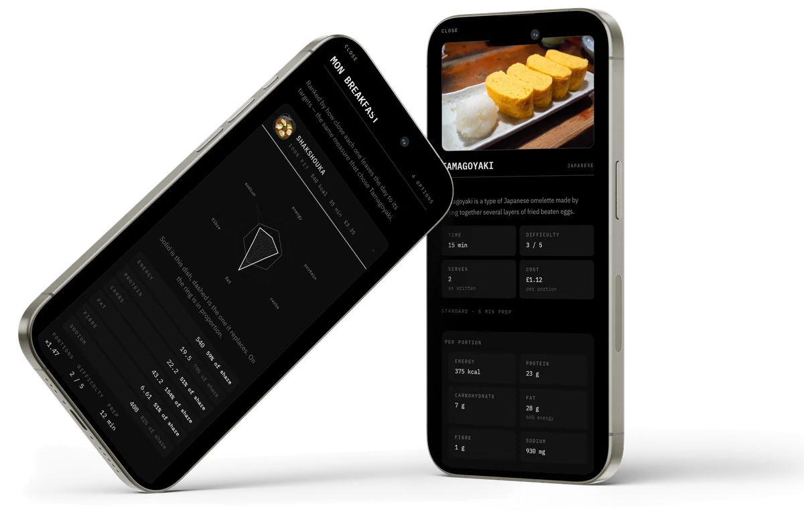
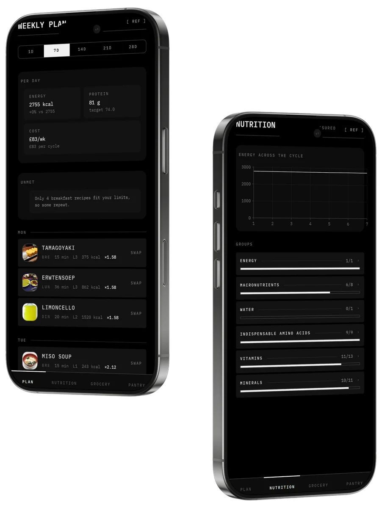
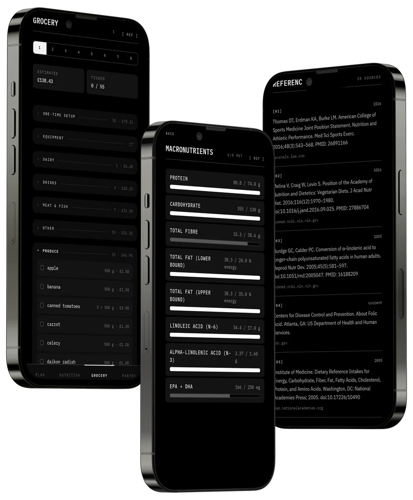

Let science be my gospel
and life be my creed.
The same meals every week, sized to your body, with a shopping list that knows your cupboard. It runs on your phone alone. No account, and nothing leaves the device.
- Nutrient targets
- 48
- Recipes
- 500
Every dish photographed, priced and weighed.
Five hundred recipes from twenty-two cuisines. Each one carries its time, its cost per portion and its figures.

Answer twelve questions. Get a plan that repeats.
Every week, fortnight or month, the same meals come round again, and the plan stays put until you change it.
- Cycle
- 7 to 28days, then it repeats
- Per day
- 2755 kcalsized to you
- Cost
- £83per week

Not cooking that on a Tuesday? Swap it.
Every replacement is ranked by how well it keeps the day on target, and the portions adjust themselves.
- Options
- 4ranked by fit
- Best fit
- 100 %shakshouka
- Portion
- ×1.47rescaled
One shopping list, sorted by aisle.
Tell it what you already have and it comes off the list, until it runs out or goes off.
- Estimated
- £138.43for the week
- Items
- 55across 7 aisles
- Sour cream
- 21 daysback in cycle 4

Install it.
Gospel is an Android app. It is not on Google Play, so it installs from this file.
Download for Android- Download the file on your phone.
- Open it, and allow the install when Android asks.
- Open Gospel. Twelve questions, then your plan.